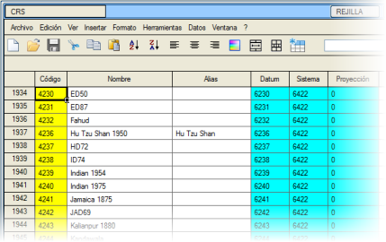
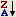

| |
|
VERİ TABLOSU
|
ISTRAM®/ISPOL®, programın farklı bölümlerinden (raporlar, CRS seçimi, yönetmeliklerin gözden geçirilmesi, projeksiyonlar,...) gelen verileri görüntülemeye, sıralamaya ve düzenlemeye olanak tanıyan bir veri tablosuna sahiptir: 
Veri sıralama Satırları sütuna göre sıralamak için, bir sütun seçiliyken (artan sıralama) veya  (azalan sıralama) düğmelerine basmak yeterlidir; bu seçenekler ayrıca Veri menüsünden de erişilebilir. Eğer bu düğmeler veya menü mevcut değilse, o zaman sıralanmak istenen sütunun başlığına farenin ikincil düğmesiyle tıklanabilir. Sırayı tersine çevirmek için bir sütunun başlığına iki kez tıklamak yeterlidir. Bu yöntem, sıralama düğmeleri ve menü mevcut olduğunda da kullanılabilir. Sıralama süreci şu şekildedir: Satırlar, sıralanmak istenen alana göre karşılaştırılır; hücrelerin verilerinin eşit olması durumunda, sırayı belirlemek için iki satırın geri kalan hücreleri soldan sağa doğru tüm sütunlar boyunca karşılaştırılır. Hücre birleştirme Bir çift düğme, iki hücreyi yatay olarak birleştirmeye veya birleştirilmiş iki hücreyi ayırmaya olanak tanır. Veri kaydetme Verileri bir ASCII dosyasına (.txt) kaydetmek için, Dosya → Farklı Kaydet... seçeneğine başvurulmalıdır. Veriler ayrıca .pdf, .doc, .rtf formatında, yani raporların oluşturulduğu formatla aynı formatta da kaydedilebilir. |